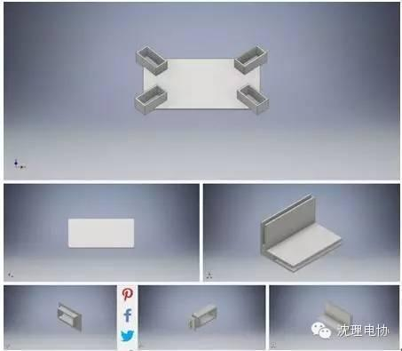
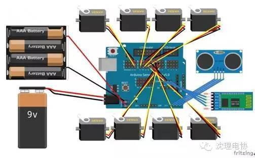
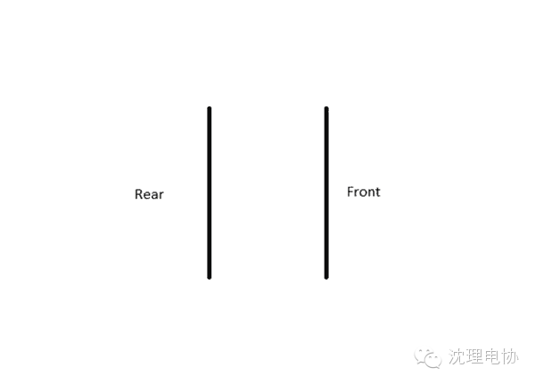

基于Arduino DIY一个会打招呼的超萌机器人
沈理电协
2016年4月22日 20:02
趣
基于Arduino DIY一个会打招呼的超萌机器人
在本项目中，我将从头开始打造一个能够使用蓝牙进行控制的四足乌龟机器人。该机器人拥有两个自由度，采用的是爬行的方式进行运动，所以在不平坦的地面可能不能正常工作。
一
第一步：3D打印组件
本机器人的部分机身是采用的3D打印技术制作的，我在这里提供了这些3D打印部件的.stl文件和.ipt文件，你可以根据自己的需要对这些文件修改。你需 要打印的文件包含一个基板、一个盖板、3个前后接头、一个前面板、4个腿部接口、4个腿部折叠构件、一个后面板、4个侧面和基板接头、2个侧面板、4个上 部构件。

二
第二步：其它组件及成本
下面我列出了本项目所需要的主要部件以及成本。（当然，在中国购买的话，大部分都会便宜一点。）
·3D打印部件~ 40-60美元
·Arduino Uno~ 20美元
·Arduino 5V传感器扩展板~ 11美元
·HC-06蓝牙模组~ 10美元
·8个Futaba S3003标准舵机~ 80美元
·超声波传感器~ 7美元
·4枚AA电池（驱动舵机）~ 6美元
·AA电池套~ 5美元
·9V电池（驱动Arduino）~ 8美元
·9V电池连接器~ 5美元
·4个母口对母口线（连接传感器和扩展板）~ 5美元
·计算机
总共大约在197美元~217美元之间。
三
第三步：腿的组装
原料备齐了之后就可以开始组装了，我们从腿部开始。8个舵机分成2组，每组4个分别安装在机器人的“大腿关节”和“膝盖关节”处。
其中“大腿关节”处4个的舵机需要固定在机器人的基板上。
四
第四步：连线
之后再将带有扩展板的Arduino和电池等安装到基板上，将蓝牙模组、舵机和超声波传感器对应连接在Arduino的相应位置上，最后连接电池。连接好了是这样：

五
第五步：运动模式设计
设计一款机器人，为其设计合适的运动模式当然是至关重要的。我的机器人是这样运动的：
当机器人向前运动时，它首先移动其右前足向前，同时机器人会将左前足向后推。这会将整个机器人的右部向前推动。然后机器人再向前移动其左后足，这时又会将其 右后足向后推。这种运动会将机器人的左部推向前。接下来机器人会左前足向前、右前足后推；然后再右后足向前、左后腿后；如此往复。这种方式能让机器人以比 较快的速度向前运动。
而当机器人倒退时，只需要反过来执行整个过程就行了。
如果机器人需要右转，则机器人移动右前足向前，同时又移动右后足向前，然后在左后足不动的情况下让右前足向后运动。接下来前移左前足，然后后移右后足，同时前移其左前足。右转即完成。
同理，当机器人需要左转时，可以让机器人线移动左前足向前，并移动左后足向前，然后在右后足保持不动的状态下让左前足向后运动。接下来，机器人继续移动右前足向前，然后移动左后足向后的同时后移其右前腿。左转即完成。

六
第六步：代码
代码分为两个部分：The_Social_Quadruped.ino和Quad_Functions.ino。
第 一个包含了Servo.h库（Arduino IDE自带）和NewPing.h。我首先定义了触发引脚、相应引脚以及超声波传感器的最大距离；之后我又定义了一个布尔变量，可以用来切换机器人的自动 模式。之后又定义了舵机。在设置函数中，我初始化了串口检测器，让我可以将命令发送到Arduino上。在循环函数中，我设置超声波传感器发送最近物体的 距离给串口检测器，然后检查用户输入。如果用户输入字符为 f, b, r, l, w, s, u 或a，那么则将分别执行前进、后退、右转、左转、挥手、睡眠、站立或自动工作这几个不同的功能。这些功能函数是在Quad_Functions.ino中 定义的，可以轻松地调用。另外，需要提及的是当用户按了a之后，机器人将进入自动模式；要取消自动模式则需要用户再点击一次a。
第二部分 Quad_Functions.ino则包含了所有功能的函数定义。其中包括机器人的各种运动模式。前进、后退、右转、左转等函数都很好理解，挥手功能包 含wave2 和wave两个函数，可以让机器人分别使用左前足和右前足挥手。waveAuto函数是机器人在自动模式下挥手，使用的是右前足。睡眠模式是指机器人将舵 机的位置运动到让机器人平躺到地面的模式。readPing函数则用来读取超声波传感器传递的数据。
七
第七步：无线控制
首先当然要确保蓝牙模块是按以上描述正确安装的。
接下来，启动你电脑上的蓝牙并将其和Arduino上的蓝牙连接配对。配对完成之后，进入控制面板，在设备中找到HC-06。右键点击并选择“属性”，选择“服务”选项，将该接口的串口通信勾线上。
然后进入Arduino IDE，选择路径Tools -> Port，将上面“服务”选项中的接口设置上去。然后就大功告成了！
打开串口监视器，你可以查看超声波传感器的读数，并且可以将机器人通过USB连接到电脑上进行控制。
====电子协会==
关注“沈理电协”微信公众平台，了解更多资讯！
信息部/吴心成
继续滑动看下一个
微信扫一扫
使用小程序

 ====电子协会======电子协会==
====电子协会======电子协会==